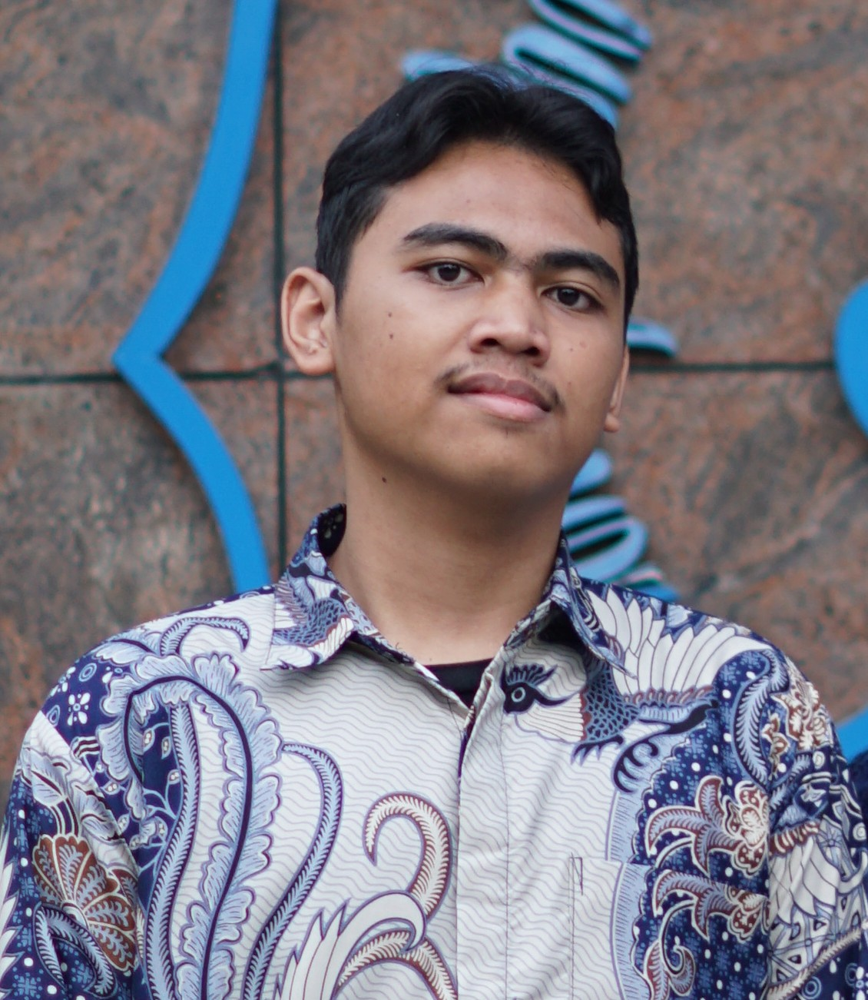

Halo, saya
Muhammad Indra Dwi Syahputra
Mahasiswa Informatika Universitas Pembangunan Nasional Veteran Jawa Timur
Mahasiswa Informatika yang tertarik pada pengembangan website, pemrograman, dan teknologi.

About Me
Halo, Saya merupakan mahasiswa semester 1 Program Studi Informatika. Saya memiliki ketertarikan pada bidang Web Development, Full Stack Development, dan Internet of Things (IoT). Saya terus mengembangkan kemampuan pemrograman menggunakan HTML, CSS, JavaScript, PHP, MySQL, C, dan C++ pada tingkat menengah.
Selain pengembangan web, saya juga memiliki pengalaman di bidang robotika dan IoT. Saya pernah meraih Juara 1 Industrial Automation Robotic Competition (IARC) yang diselenggarakan oleh Departemen Teknik Elektro Otomasi ITS serta memperoleh peringkat 3 OSN Informatika tingkat Kabupaten/Kota Gresik. Saya juga pernah mengerjakan beberapa proyek berbasis Arduino, seperti maket interaktif, robot pembersih, serta alat pengukur jarak menggunakan sensor ultrasonik dan LCD.
Saat ini, saya terus memperdalam kemampuan di bidang pengembangan perangkat lunak dan teknologi IoT serta membangun berbagai proyek sebagai bagian dari perjalanan saya untuk berkembang menjadi seorang developer yang mampu menggabungkan software dan hardware dalam menciptakan solusi yang bermanfaat.
Informatika - Universitas Pembangunan Nasional Veteran Jawa Timur 2026-Sekarang
Web Development (Menengah), C/C++ (Dasar-Menengah)
Surabaya, Indonesia